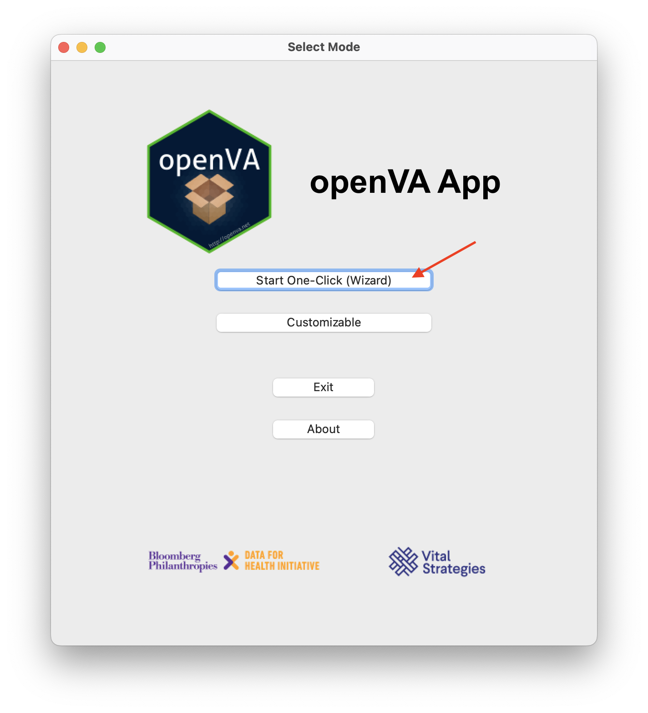

One-Click Wizard¶
This mode in the openVA App will guide you through a series of windows where you will
Each of these steps is described below. To access this mode, simply press the “Start One-Click (Wizard)” button in the initial openVA App window
